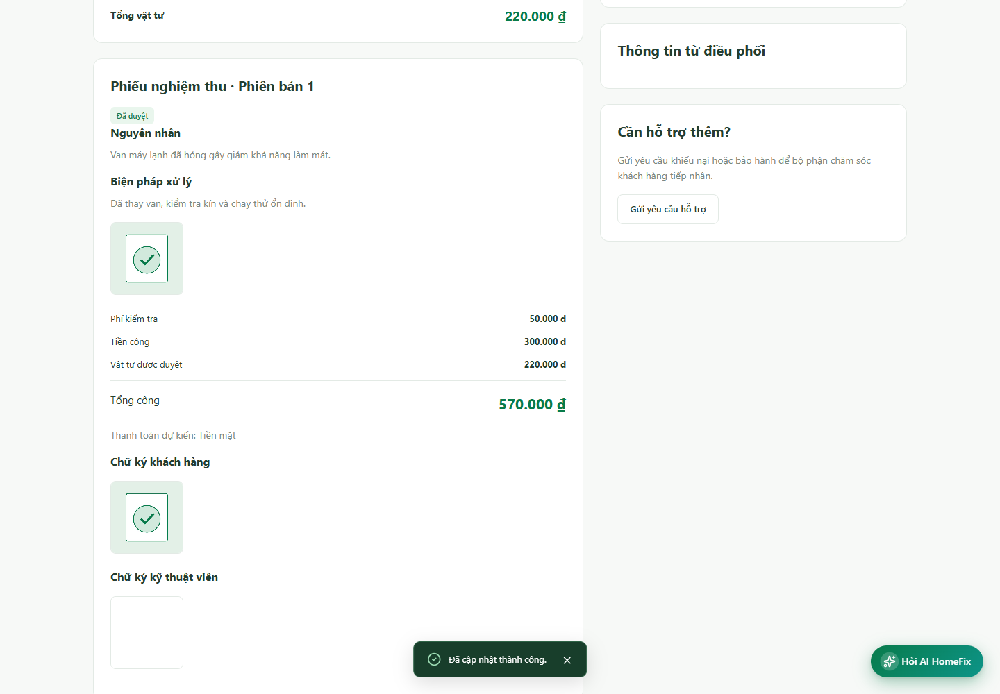

Khách hàng: nghiệm thu, thanh toán và đánh giá
- Mở đơn Chờ nghiệm thu; đọc nguyên nhân, biện pháp sửa, vật tư, tổng tiền và ảnh minh chứng.
- Kiểm tra chữ ký kỹ thuật viên. Chữ ký này không thay thế chữ ký khách hàng.
- Nếu đạt yêu cầu, chọn Xác nhận nghiệm thu, đánh dấu đã kiểm tra và cung cấp chữ ký khách hàng theo biểu mẫu. Nếu chưa đạt, sử dụng lựa chọn từ chối để yêu cầu xử lý tiếp.
- Với COD, chỉ giao tiền theo số phải thanh toán; KTV xác nhận đã thu. Với chuyển khoản, dùng đúng thông tin tài khoản/nội dung và gửi yêu cầu theo hướng dẫn; kế toán phải xác minh.
- Kiểm tra trạng thái đã thanh toán sau khi được xác nhận; tạo QR hoặc gửi chứng từ chưa có nghĩa đã thanh toán.
- Sau khi đơn hoàn thành và thanh toán đủ điều kiện, chọn Đánh giá dịch vụ, nhập nhận xét và gửi.
Nếu hủy đơn có phí di chuyển, theo dõi khoản phí riêng. Không xem trạng thái Đã hủy là mặc nhiên không còn nghĩa vụ thanh toán. Chi phí hiển thị trên đơn thực tế là căn cứ, không lấy số tiền từ ảnh hướng dẫn.


Kết quả xác nhận nghiệm thu trong kịch bản kiểm thử — bấm ảnh để xem kích thước gốc.